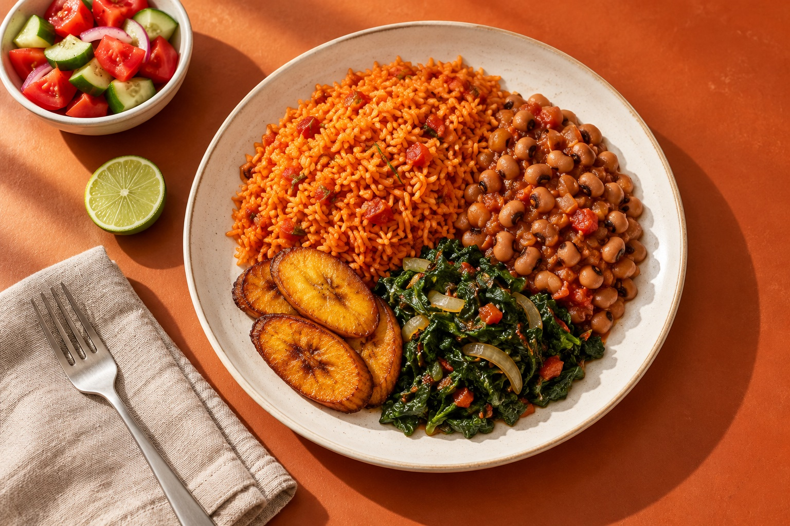

Familiar food. Thoughtfully planned.
Your food.
Your week.
Made yours.
The African meals you love.
A plan for the life you live.
No sign-up. No payment. Just a place to start.
More than deciding what’s for dinner.
A little room for the rest of life.

- 01
Keep it familiar.
Start with a plate or a week of African meal ideas. Swap foods and make it your own.
- 02
Make room for real life.
Change meals, adjust portions and reuse a week that worked for your household.
- 03
Bring the shopping together.
One combined ingredient list, scaled for your household. Review it before saving.